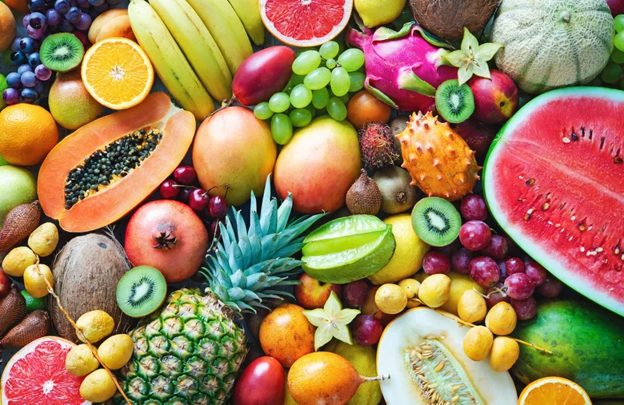

news
Menu
Home
Food
Games
Dance
gossip
sports

11 Top Watermelon Health Benefits That Nutritionists Say Are Backed by Promising Research
if you wanna learn more click here
Wendy's Is Introducing Uber-Style 'Surge Pricing